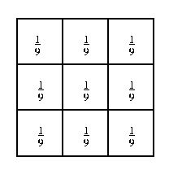

1. Introduction
The Mean filter is convolution operator using for reducing the amount of intensity variation between on one pixel and its neighbors.
The idea of mean filtering is simply to replace each pixel value in an image with the mean value of its neighbors.

In 2D, the Mean filter kernel is easy to be separate into \(x\) direction and \(y\) direction.
With \(3\times{3}\) filter, \(\left[\begin{array}{}\frac{1}{9} & \frac{1}{9} & \frac{1}{9}\\\frac{1}{9} & \frac{1}{9} & \frac{1}{9}\\\frac{1}{9} & \frac{1}{9} & \frac{1}{9} \end{array}\right]=\left[\begin{array}{}\frac{1}{3}\\\frac{1}{3}\\\frac{1}{3} \end{array}\right]\times{\left[\begin{array}{}\frac{1}{3}&\frac{1}{3}&\frac{1}{3} \end{array}\right]}\)
2. Experiment
3. References
- https://homepages.inf.ed.ac.uk/rbf/HIPR2/mean.htm